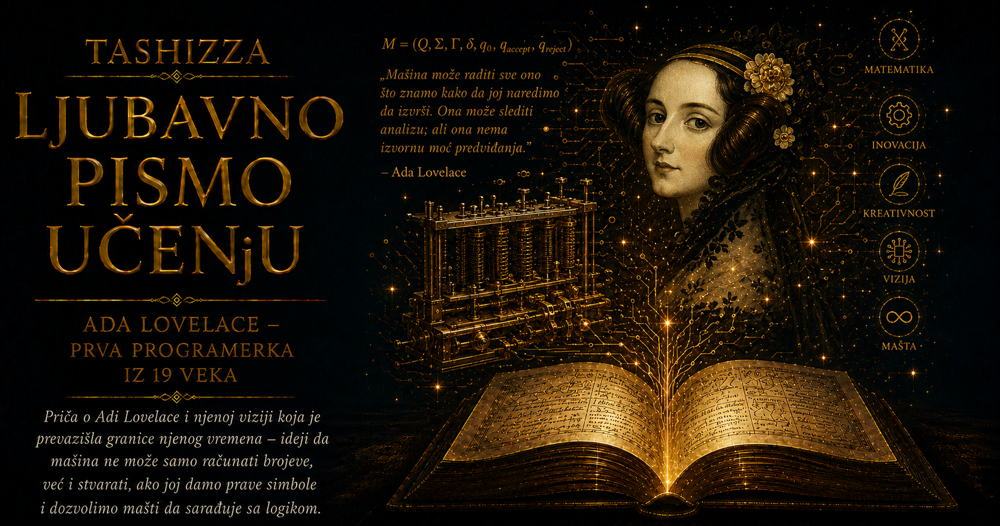

Ljubavno pismo učenju

Pre digitalnog sveta postojalo je računanje kao dugotrajan, skup i osetljiv ljudski posao. Astronomi, navigatori, geodeti, inženjeri i državni činovnici oslanjali su se na matematičke tablice koje su sastavljale grupe posebno obučenih ljudi. Složen zadatak rastavljao se na veliki broj jednostavnijih operacija, međurezultati su se prepisivali iz sveske u svesku, a završne vrednosti štampale i distribuirale svima kojima su bile potrebne. Greška učinjena na početku mogla je proći kroz čitav lanac proračuna i pojaviti se u hiljadama primeraka neke tablice, pa je računanje zahtevalo strpljenje, disciplinu i neprekidnu proveru.
Mehaničke računske sprave ubrzavale su pojedine aritmetičke operacije, ali su uglavnom bile napravljene za ograničen skup zadataka. Čovek je birao svaki sledeći korak, unosio vrednosti i nadgledao tok rada. Zamisao da bi jedna mašina mogla primiti čitav niz instrukcija, čuvati međurezultate, ponavljati određene delove postupka i prelaziti sa jednog problema na drugi promenom programa još nije bila jasno oblikovana. Između kalkulatora i računara pružao se ogroman pojmovni prostor koji je čekao ljude sposobne da ga prepoznaju.
Čarls Bebidž osmislio je Analitičku mašinu kao programabilni mehanički uređaj sa „skladištem” za podatke i „mlinom” za izvođenje operacija. Ada Lovelace razumela je najdalekosežniju posledicu takve arhitekture. Iza osovina, točkova i bušenih kartica videla je mogućnost da se ljudska zamisao prevede u precizan niz formalnih koraka. Mehanička konstrukcija pružala je sposobnost izvršavanja, dok su instrukcije određivale kakav će zadatak ta sposobnost rešavati. U tom odnosu mašine i programa nalazila se klica opštenamenskog računara.
Priliku da svoju viziju razvije dobila je posle Bebidžovih predavanja u Torinu 1840. godine. Italijanski matematičar i inženjer Luiđi Federiko Menabrea objavio je na francuskom jeziku prikaz Analitičke mašine, a Ada ga je prevela na engleski. Uz prevod je dodala sedam opsežnih beležaka, označenih slovima od A do G, koje su zajedno bile znatno duže od izvornog članka. U njima je objašnjavala kako bi mašina primala podatke i instrukcije, birala operacije, čuvala privremene vrednosti, vraćala ih u računanje i povezivala veliki broj koraka u uređen proces.
Vrednost tih beležaka nalazi se u promeni ugla posmatranja. Opis mašine više nije bio ograničen na njene fizičke delove, jer je Ada pažnju usmerila na tok izvršavanja: na redosled operacija, kretanje podataka, ponavljanje postupaka i zavisnost svakog novog koraka od prethodno dobijenih rezultata. Time je pokazala da program poseduje sopstvenu logiku, različitu od materijala od koga je uređaj napravljen. Isti sklop mogao bi dobijati nove namene kada mu se zada drugačiji niz instrukcija.
Analitička mašina koristila bi bušene kartice po uzoru na Žakarove razboje, na kojima je raspored otvora određivao koje će se niti podići i kakva će šara nastati. U Bebidžovoj mašini jedne kartice nosile bi podatke, druge bi određivale operacije, a njihov raspored upravljao bi tokom proračuna. Ada je u tom sistemu prepoznala formalni jezik pomoću koga se čovekova namera može rastaviti na korake dovoljno precizne da ih mehanizam izvrši bez dodatnog ljudskog odlučivanja.
U najpoznatijem delu rada, Belešci G, prikazala je postupak za izračunavanje Bernulijevih brojeva. Proračun je zahtevao pažljivo organizovanje međusobno zavisnih operacija, čuvanje privremenih vrednosti i višestruko vraćanje na određene korake. Ada je pripremila tabelu koja pokazuje kojim redom mašina koristi promenljive, koju operaciju izvršava nad njima, gde smešta rezultat i kako ga kasnije ponovo uključuje u računanje. Matematički postupak tako je dobio oblik prilagođen automatskom izvršavanju.
Savremenim jezikom takav zapis možemo čitati kao program: u njemu postoje početne vrednosti, operacije, promenljive, privremeno skladištenje podataka, ponavljanje i određen sled izvršavanja. Program nije mogao biti pokrenut zato što Analitička mašina nije dovršena, ali je pokazao kako se algoritam prilagođava arhitekturi programabilnog uređaja. Upravo je ta veza između apstraktne metode i konkretnih mogućnosti mašine postala jedan od temeljnih zadataka programiranja.
Istorijska preciznost zahteva da se Adin rad posmatra unutar saradnje sa Bebidžom. On je ranije sastavljao sopstvene postupke za Analitičku mašinu i neposredno je učestvovao u razradi proračuna Bernulijevih brojeva. Njihova pisma svedoče o intenzivnoj razmeni ideja, tabela, ispravki i predloga. Izraz „prva programerka” sačuvao je snažnu simboličku vrednost, dok se njen stvarni doprinos još jasnije vidi u objavljenom, iscrpno objašnjenom algoritmu i razvijenom razumevanju odnosa između instrukcije, podatka, simbola i programabilne mašine.
Adin najdublji uvid pojavio se kada je mogućnosti mašine proširila izvan aritmetike. Brojevi su za nju mogli predstavljati mnogo više od količina. Ako se tonovi, slova, ritmovi, položaji ili logički odnosi izraze odgovarajućim simbolima, uređaj može izvoditi formalno određene operacije nad njihovim zapisom. Značenje simbola potiče iz sistema koji su oblikovali ljudi, dok mašina dosledno sledi pravila obrade. U toj misli sadržan je jedan od osnovnih principa digitalne civilizacije.
Kao primer navela je muziku. Kada bi se odnosi među tonovima i pravila harmonije izrazili na odgovarajući način, Analitička mašina mogla bi sastavljati složene muzičke obrasce. Ta zamisao pojavila se više od jednog veka pre digitalnih sintetizatora, računarske kompozicije i multimedijalnih uređaja. Današnji računari istim fizičkim sklopovima obrađuju tekst, slike, zvuk, video, naučne podatke i programski kod upravo zato što se svi ti sadržaji mogu predstaviti formalnim zapisima.
Prelazak od broja kao mere količine ka broju kao nosiocu simbola presudno je promenio prirodu računanja. Računar ne mora da doživljava simfoniju da bi obradio njen digitalni zapis, niti mora da vidi fotografiju ljudskim očima da bi promenio vrednosti njenih piksela. Potrebno je osmisliti način predstavljanja podataka i odrediti operacije koje se nad tim prikazom mogu izvoditi. Ada je taj princip sagledala dok je računar još postojao u nacrtima i matematičkim opisima.
Njena čuvena slika Analitičke mašine koja „tka algebarske obrasce” kao što Žakarov razboj tka cvetove i lišće savršeno izražava njen način mišljenja. U toj rečenici susreću se algebra i umetnost, formalno pravilo i stvaralački uzorak, tehnička disciplina i pesnička imaginacija. Ada je razumela da programiranje podseća na tkanje: svaka instrukcija zauzima određeno mesto, pojedinačni koraci grade složeniju celinu, a promena obrasca može istom mehanizmu dati potpuno novu namenu.
Program je time postao most između čovekove zamisli i sposobnosti mašine da neumorno izvršava formalne korake. Pouzdanost tog mosta zahteva da se jasno odredi koji se podatak koristi, gde se čuva, kada se menja, koliko puta se neka operacija ponavlja i u kom trenutku rezultat prelazi u sledeći deo postupka. Programiranje je od svojih najranijih početaka tražilo spoj dve snage koje su se u Adi srele sa izuzetnom punoćom: mašte sposobne da zamisli novu namenu i discipline sposobne da tu namenu izrazi bez neodređenosti.
Ada je taj spoj nazivala „poetskom naukom”. Poezija je u njenom pristupu bila sposobnost otkrivanja skrivenih veza, prelaska preko granica pojedinačnih disciplina i sagledavanja mogućnosti koje još nemaju gotov oblik. Matematika je tim mogućnostima davala strukturu, proverljivost i granice. Vizija joj je omogućila da iza nedovršene mehaničke konstrukcije vidi budućnost simboličke obrade, dok joj je analitičko obrazovanje omogućilo da tu budućnost poveže sa karticama, promenljivama, operacijama i tokom izvršavanja.
Upravo zato je Ada Lovelace moja lična heroina. U njenom delu pesnička osetljivost i naučna strogost pripadaju istom umu, hrane jedna drugu i zajedno proširuju prostor mogućeg. Ona pokazuje da ljubav prema lepoti može produbiti matematički pogled, kao što preciznost može sačuvati imaginaciju od proizvoljnosti. Njena vizija nije lebdela izvan tehnike; ulazila je u samu strukturu mašine, prateći put podataka i instrukcija sve dok mogućnost nije dobila oblik koji se može objasniti drugima.
Iz takvog načina mišljenja proisteklo je rano razumevanje opštenamenskog računanja. Ista mašina mogla bi da rešava različite probleme ukoliko svaki od njih dobije odgovarajući program. Fizički uređaj više nije morao biti iznova konstruisan za svaku novu namenu. „Mlin” i „skladište” mogli su učestvovati u različitim postupcima, dok bi bušene kartice menjale tok rada. Ta prilagodljivost postala je jedna od najvažnijih osobina digitalnog sveta.
Savremeni računar može služiti pisanju, projektovanju, komunikaciji, obrazovanju, naučnim proračunima, komponovanju muzike i upravljanju složenim sistemima zato što mu softver neprestano daje nove uloge. Čitave industrije nastale su iz mogućnosti da se isti hardver preobražava drugačijim programima. Operativni sistemi, poslovne aplikacije, naučne simulacije, video-igre, mrežni servisi i alati veštačke inteligencije razvijaju isti temeljni princip: namena uređaja proističe iz odnosa njegove arhitekture, podataka i instrukcija.
U Adinim beleškama vide se i rani obrisi mišljenja koje će kasnije postati važno za organizaciju programa. Složen postupak postaje razumljiviji kada se razdeli na manje operacije sa jasno određenim ulazima i rezultatima. Vrednost dobijena u jednom delu može se koristiti u sledećem, dok se određena grupa instrukcija može ponavljati nad novim podacima. Današnje funkcije, procedure, biblioteke i softverski moduli razvijaju tu istu potrebu da se velika složenost učini preglednom, proverljivom i pogodnom za ponovno korišćenje.
Ada je razmišljala i o granicama mašinske moći. Naglasila je da Analitička mašina izvršava odnose koje je čovek umeo da joj zada i da složen ili iznenađujući rezultat ne treba odmah izjednačiti sa samostalnom namerom. Alan Tjuring će više od jednog veka kasnije njenu tvrdnju nazvati „prigovorom ledi Lovelace” i uključiti je u raspravu o mašinskom mišljenju. Današnji sistemi veštačke inteligencije tom pitanju daju novu dubinu, jer iz podataka uče obrasce i proizvode rezultate koje njihovi tvorci nisu unapred pojedinačno napisali.
Adina opreznost ostaje dragocena i u savremenom svetu. Sposobnost sistema da iznenadi korisnika ne oslobađa nas obaveze da proučavamo njegove podatke, ciljeve, arhitekturu, način učenja i ograničenja. Mašina može proizvesti neočekivanu kombinaciju ili otkriti obrazac koji čovek nije uočio, dok odgovornost za njeno projektovanje, tumačenje i upotrebu ostaje u ljudskom prostoru. Tako se njeno nasleđe proteže od prvih programa do današnjih pitanja o prirodi kreativnosti, inteligencije i odgovornosti.
Analitička mašina nije dovršena, pa Adine beleške nisu neposredno pokrenule industriju računara i zajednice programera. Tehnologija devetnaestog veka teško je mogla dovoljno precizno izraditi i uskladiti ogroman broj mehaničkih delova, projekat je zahtevao velika sredstva, a stalne izmene konstrukcije dodatno su otežavale njegov završetak. Elektronski računari dvadesetog veka nastali su kroz drugačiji razvojni put, oblikovan matematičkom logikom, teorijom izračunljivosti, ratnim projektima, elektromehaničkim uređajima, vakuumskim cevima, tranzistorima i elektronskom memorijom.
Veza između Adinih beležaka i savremenih računara zato ima duboko pojmovno značenje. Ona nije napisala izvorni kod iz koga su kasnije neposredno nastali programski jezici, ali je rano prepoznala principe koji će postati presudni: razdvajanje mašine i programa, predstavljanje različitih sadržaja simbolima, upravljanje tokom izvršavanja, korišćenje promenljivih i ponavljanje grupa operacija. Kada su računari konačno postali stvarni, pokazalo se koliko je precizno razumela prirodu uređaja koji njeno stoleće nije uspelo da izgradi.
Njeno ime dobio je programski jezik Ada, razvijan od kraja sedamdesetih godina dvadesetog veka za složene, pouzdane i dugotrajne softverske sisteme. Jezik podstiče jasnu strukturu, snažnu proveru tipova podataka, modularnost, kontrolu istovremenih procesa i rano otkrivanje grešaka. Njegove savremene verzije i srodni jezik SPARK koriste se u oblastima u kojima pouzdanost softvera ima neposredne posledice po bezbednost ljudi: u avionici, železničkim sistemima, svemirskim projektima, medicinskim uređajima, odbrambenoj tehnici i industrijskoj automatizaciji.
U tome postoji lepa istorijska saglasnost. Ime žene koja je program posmatrala kao precizno uređenu tvorevinu živi u jeziku namenjenom sistemima od kojih se zahteva izuzetna pouzdanost. Njena tabela za Bernulijeve brojeve pripadala je dobu mehaničkih zupčanika, dok softver koji danas nosi njeno ime upravlja elektronskim sistemima nezamislive složenosti. Između njih nema jednostavne tehnološke linije nasleđivanja, ali postoji trajna srodnost u poštovanju strukture, jasnoće i odgovornosti.
Adine beleške nose i važnu pouku o prenošenju znanja. Složena mašina dobija punu vrednost tek kada su njeni principi objašnjeni tako da ih drugi mogu razumeti, proveravati i dalje razvijati. Prevodom, komentarima, tabelama i podrobnim tumačenjima Ada je Bebidžovu zamisao učinila dostupnijom široj naučnoj zajednici. Programabilnost se tako već na početku povezala sa dokumentovanjem, saradnjom i mogućnošću da tuđi rad postane polazište za novo stvaranje.
Istorijske rasprave o njenoj tituli podsećaju nas da velika dostignuća retko nastaju u potpunoj usamljenosti. Bebidž je projektovao arhitekturu Analitičke mašine i ranije pisao postupke za nju; Ada je kroz saradnju, prevod i sopstvene beleške pružila izuzetno razvijeno tumačenje njene programabilnosti i simboličkih mogućnosti. Pažljivo utvrđivanje zasluga ne umanjuje njenu veličinu. Ono je oslobađa pojednostavljenog mita i pokazuje stvarnu snagu njenog rada: sposobnost da postojeću tehničku zamisao razume dublje, izrazi jasnije i odvede dalje prema budućnosti.
Kada savremeni računar piše tekst, obrađuje fotografiju, reprodukuje simfoniju, vodi avion, istražuje genom ili pokreće model veštačke inteligencije, on koristi mogućnost da ista mašina promenom programa i načina predstavljanja podataka dobije novu ulogu. Ada Lovelace nije izgradila takve sisteme, ali je među prvima sagledala zajednički princip koji ih povezuje. Razumela je da mašini možemo predati čitav postupak, a simbolima poveriti delove ljudskog znanja, stvaranja i naučnog istraživanja.
Bez njenih beležaka Analitička mašina mogla je ostati zapamćena prvenstveno kao veličanstven projekat mehaničkog inženjerstva. Zahvaljujući njenom pogledu, sačuvana je i druga dimenzija te zamisli: univerzalna mašina koja izvršava formalno opisane ideje. U tom ranom trenutku istorija računarstva dobila je jednu od svojih najlepših vizija — ženu koja je sa podjednakom ljubavlju gledala matematiku i poeziju, a u njihovom susretu prepoznala svet koji će tek mnogo kasnije naučiti da njenu imaginaciju pretvara u stvarnost.